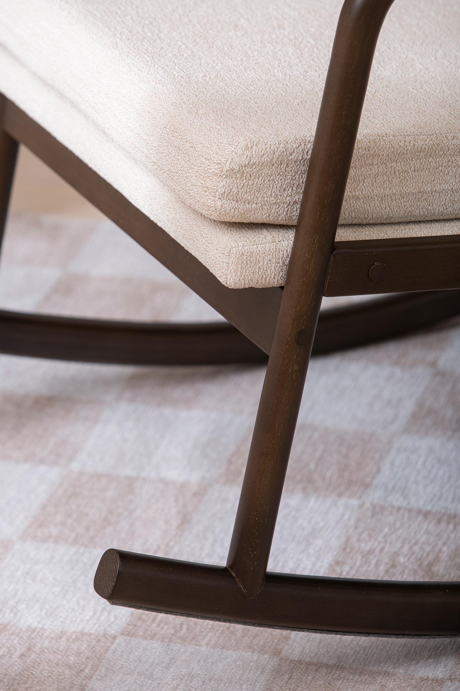
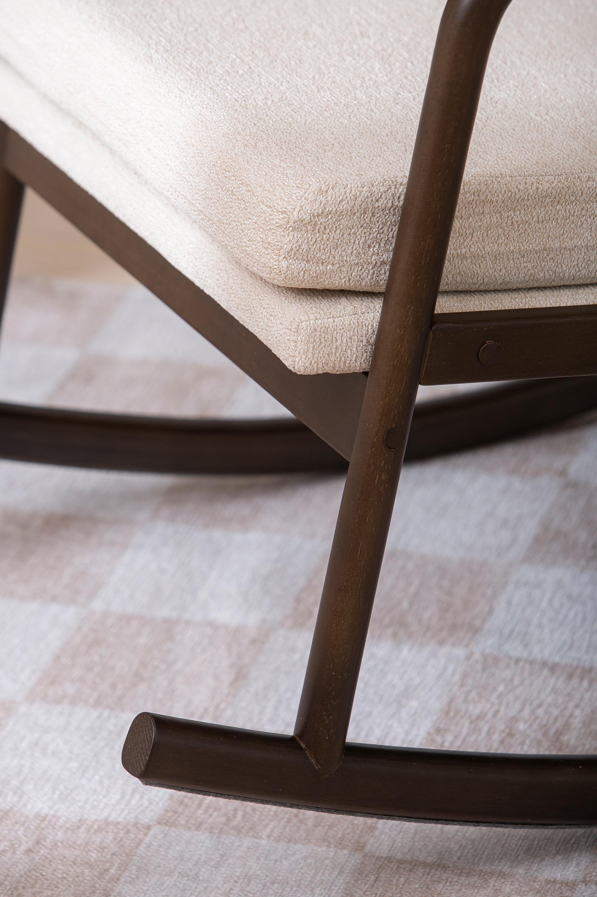

Swan rocking chair, walnut rubberwood frame / beige fabric
198103


 


Description
The Swan rocking chair merges contemporary aesthetics with exceptional comfort. Featuring a walnut-toned rubberwood frame paired with soft beige fabric upholstery, its design emphasizes support with a high backrest and wide armrests. The gracefully curved legs allow for a gentle rocking experience, creating a tranquil retreat in any living space. Available in Gold, Silver, and Bronze tiers, each version delivers premium craftsmanship suited for indoor use, making it a timeless addition to your home decor within the exclusive NEST & LIVING collection.
Technical specifications
| Color | Beige |
|---|---|
| Frame Material | Walnut Rubberwood |
| Fabric | Soft Upholstery Fabric |
| Design Features | High backrest, wide armrests, curved rocking legs |
| Tiers Available | Gold, Silver, Bronze |